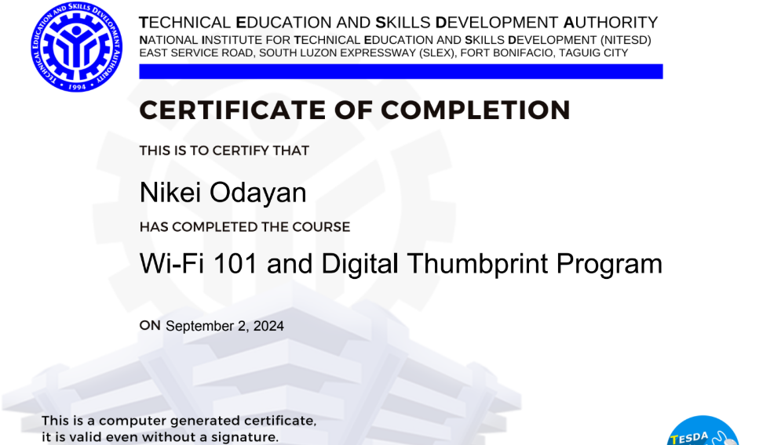
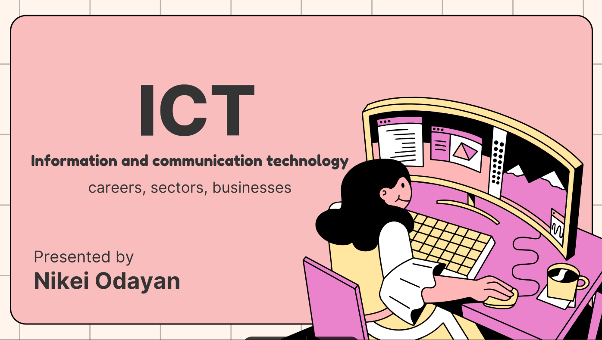
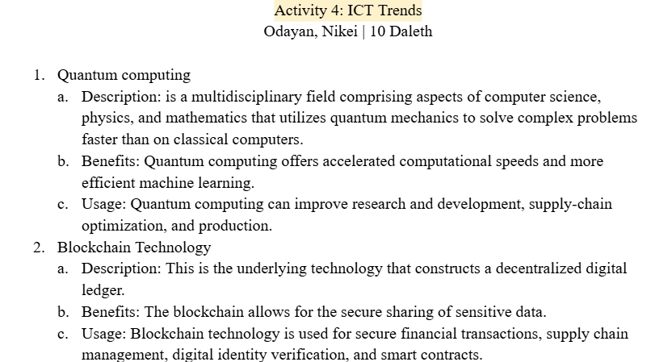
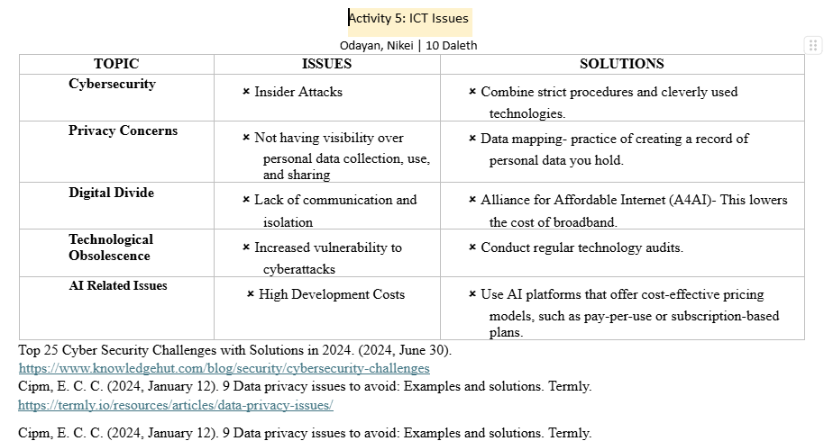
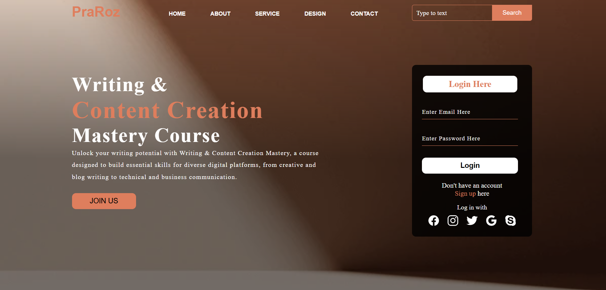
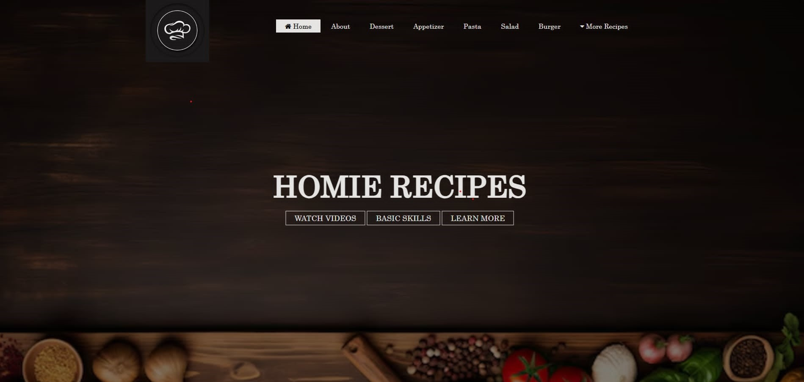
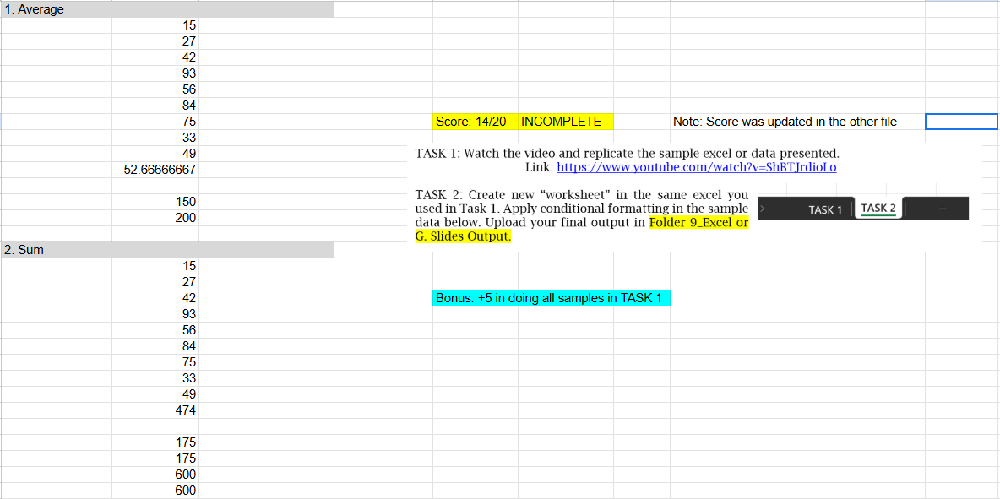
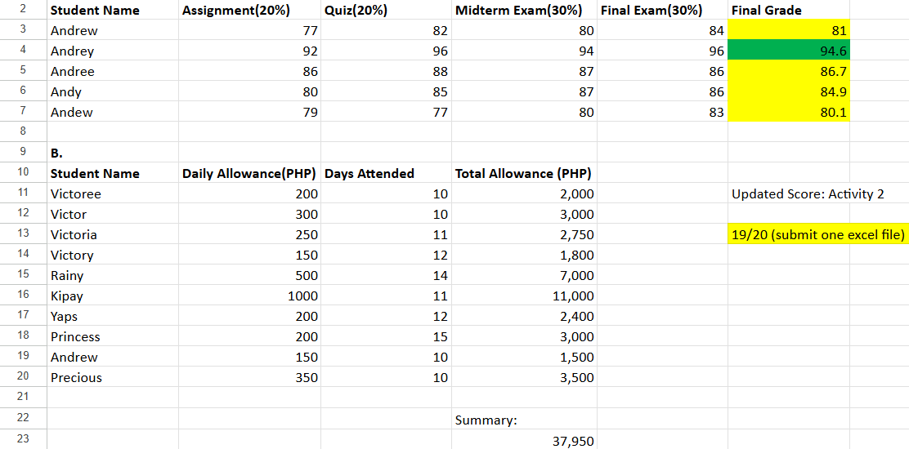
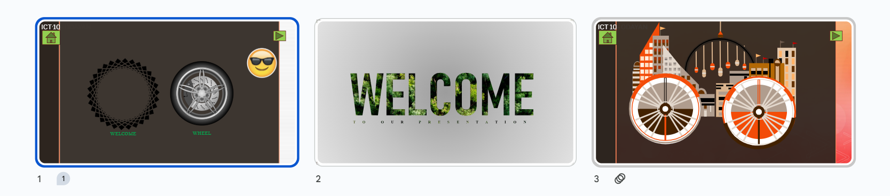

Welcome to Our Activities
This website showcases the various activities we have undertaken in the first and second quarters. Here you can find highlights of our projects, photos, and descriptions.
Sample Activities
First Quarter Highlights
In the first quarter, we explored ICT careers, sectors, and opportunities, gaining insights into the growing technology job market. We also utilized the e-Tesda Online Learning Platform, learning key topics like Wi-Fi 101 and Microsoft Digital Literacy.
   Second Quarter Highlights
In the second quarter, we focused on Presentation Software, Spreadsheets, and Website Making through Coding. We learned to create dynamic presentations, manage data using spreadsheets, and build websites by coding with HTML, CSS, and JavaScript.
    About Us
Welcome to our website! We are a group of students exploring various activities in the field of ICT. We focus on both practical and theoretical knowledge, with an emphasis on hands-on experience in modern technology.
Contact Us
If you have any questions or would like to reach out, feel free to contact us at:
Email: nkeigr.c@gmail.com
Phone: 09385955378